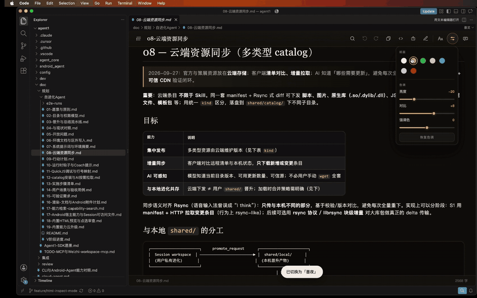
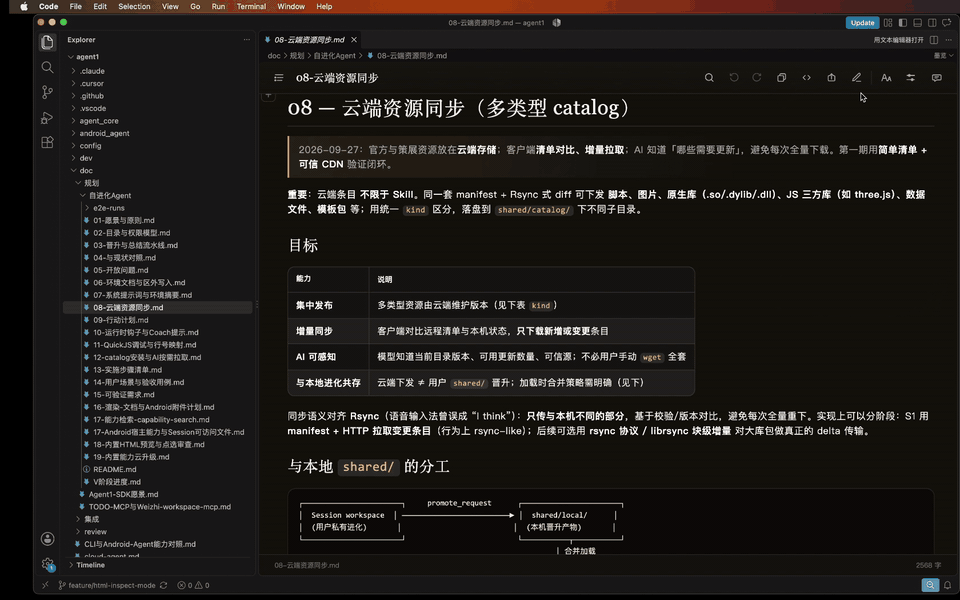
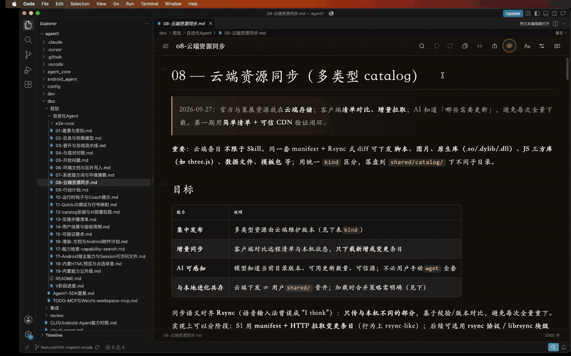
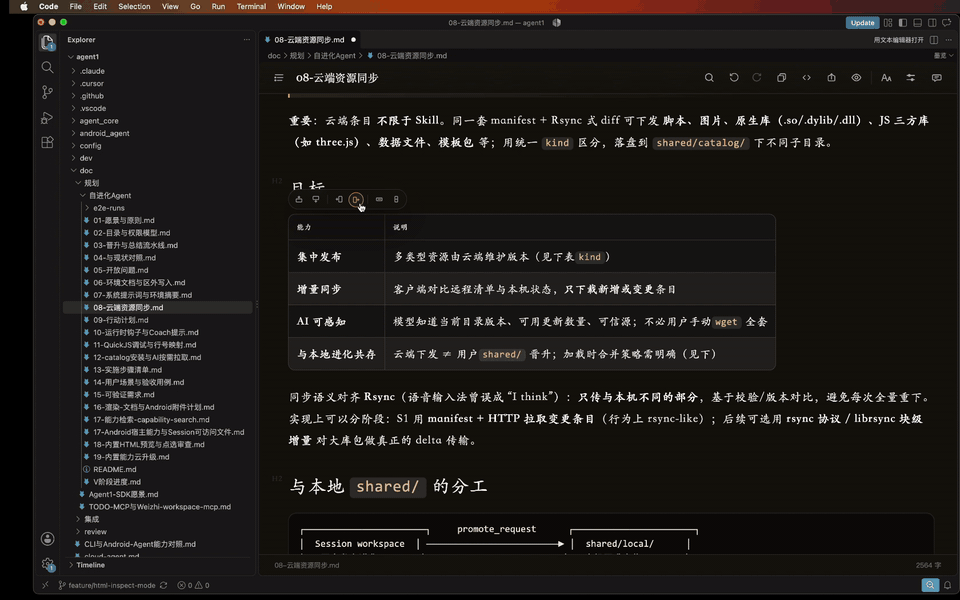

01纸面与排版
点左上角齿轮打开「纸面」，或在扩展里点顶栏 Aa。四种纸面都为长时间阅读设计，不是简单的亮/暗开关。
- 宣纸暖色纸面
- 墨夜默认夜读
- 终端磷光绿
- 胭脂柔粉衬线

点色块或视觉风格，纸面立刻换肤。

字号、行高、段间、边距都能滑杆微调，长文读起来更合眼。同一菜单里也可换界面语言或安装扩展。
02要点再编辑
要改字时，点顶栏铅笔进入即时渲染：标题、代码、表格都在纸面上改。 Ctrl / Cmd + S 保存。Chrome / Edge 写回原文件；兼容模式会下载。

点进单元格直接改字；选中后顶栏可增删行列。

流程图块即时渲染；点进节点改文案，预览里同步更新。
用 AI 成为贡献者
先复制下面这段发给 Cursor，让它准备好环境；再说你想改什么。克隆、读说明、改代码都交给它。
帮我准备开源项目墨览（https://github.com/fengshihao/molan）的贡献环境：请你自己克隆仓库、读 AGENTS.md 和 docs/ai/START.md，需要时运行 ./molan。准备好后告诉我，我再说想贡献什么。